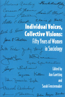

<body bgcolor="#FFFFFF" text="#000000" link="#0000FF" vlink="#CC0000" alink="#CC0000"><center><hr width="350" size="1" align="center" noshade>Original essays by eighteen senior women sociologists on their diverse personal histories and professional experiences<hr width="350" size="1" align="center" noshade><p><a href="https://cdcshoppingcart.uchicago.edu/Cart/ChicagoBook.aspx?ISBN=9781566392501&&PRESS=temple" target="_top">Buy this book!</a> | <a href="https://cdcshoppingcart.uchicago.edu/Cart/Cart.aspx?PRESS=temple" target="_top">View Cart</a> | <a href="https://cdcshoppingcart.uchicago.edu/Cart/Cart.aspx?PRESS=temple" target="_top">Check Out</a></p><p></p></center><!--none//--><h1>Individual Voices, Collective Visions</h1>
<H2>Fifty Years of Women in Sociology</H2>
<h3>edited by Ann Goetting and Sarah Fenstermaker</h3>
<P>cloth 1-56639-250-0 $59.95, Jan 95, <FONT COLOR=#990033>Out of Print</FONT>
<br>paper 1-56639-251-9 $31.95, Jan 95, <FONT COLOR=#990033>Out of Stock Unavailable</FONT>
<BR> 376 pp
6x9
</P><p>In essays written specially for this volume, eighteen senior women sociologists engage in analytic reflections on interconnections between their personal lives and their research, teaching, and activism. With humor, irony, and passion, these women&#151whose institutions range from elite universities to junior colleges&#151convey their diverse personal histories, career paths, and professional obstacles. As a result, the volume provides a picture of the complex dynamic among individual biography and sociological practice, personal growth, and institutional change.
<BR>&nbsp;<h2>Contents</h2><P>
<p>Acknowledgments
<br>Introduction: Fictions of the Self &#150 Ann Goetting
<p><b>Part I: Echoes of the Baby Boom: Mothering and Careers</b>
<br>1. Writing Papers and Stirring Soup: Career and Family in the Baby Boom Years &#150 Darha Clapper Brack
<br>2. An Accidental Sociologist &#150 Beth B. Hess
<br>3. Obstacles and Opportunities en Route to a Career in Sociology &#150 Hannah Schiller Wartenberg
<p><b>Part II: Up the Down Escalator: Tales of Academic Mobility</b>
<br>4. Acquiring an Academic Room of One's Own &#150 Jane E. Prather
<br>5. Reflections on a Serendipitous and Rocky Career &#150 Janet Lever
<br>6. Paradigm Lost: The Journey from Normal Science to Permanent Marginality &#150 Judy Long
<p><b>Part III: Varieties of International Sociology</b>
<br>7. Marginality, Migration, and Metamorphoses &#150 Britta Fischer
<br>8. Bridging Worlds: A Sociologist's Memoir &#150 Suzanne Keller
<br>9. Sociologist by Default: Reflections on Past Choices and Future Goals &#150 Martha E. Gimenez
<br>10. The Life Course of a Sociologist &#150 Helena Znaniecka Lopata
<p><b>Part IV: Isolation, Marginality...</b>
<br>11. Discovering Gender: My Paths to a Feminist Sociology &#150 Elaine J. Hall
<br>12. Isolation and the Woman Scholar &#150 Diane Margolis
<br>13. Slouching Toward Sociology &#150 Helen Mayer Hacker
<br>14. Working the Third Shift &#150 Lynda Lytle Holmstrom
<p><b>Part V: ...And Community</b>
<br>15. Seventeen White Men and Me &#150 Coramae Richey Mann
<br>16. Marginality, Motherhood, and Method: Paths to a Social Science Career and Community &#150 Shulamit Reinharz
<br>17. Kaddish and Renewal &#150 Gaye Tuchman
<br>18. Becoming an Active Feminist Academic: Gender, Class, Race, and Intelligence &#150 Pamela Ann Roby
<br>Conclusion: "Editing" Women, Memoir, and the Sociological "I" &#150 Sarah Fenstermaker
<p>About the Editors and Contributors
</P><BR>&nbsp;<H2>About the Author(s)</H2>
<table><tr><td valign="top"><img src="/tempress/authors/1048_au1.gif" height="90" width="75"></td><td width="100%" valign="middle"><p><b>Ann Goetting</b> is Professor of Sociology at Western Kentucky University.</P></td></tr></table><P><b>Sarah Fenstermaker</b> is Professor of Sociology and Women's Studies at the University of California, Santa Barbara.</P>
<P>Contributors: Britta Fischer, Martha E. Gimenez, Helen Mayer Hacker, Elaine J. Hall, Beth B. Hess, Lynda Lytle Holmstrom, Suzanne Keller, Janet Lever, Judy Long, Helena Znaniecka Lopata, Coramae Richey Mann, Diane Margolis, Jane E. Prather, Shulamit Reinharz, Pamela Ann Roby, Gaye Tuchman, Hannah Schiller Wartenberg, Audrey Wipper, and the editors.</P>
<BR><H2>Subject Categories</H2>
<p><A HREF="/tempress/sociology.html" TARGET="_top">Sociology</a>
<BR><A HREF="/tempress/women.html" TARGET="_top">Women's Studies</a>
</p>
<BR><h2 class="inpageheading">In the series</H2>
<P><I><a href="http://www.temple.edu/tempress/women_political.html" onMouseOver="window.status='Click for other books in this series!'; return true;" onMouseOut="window.status=''; return true;" target="_top">Women in the Political Economy</a></i>, edited by Ronnie J. Steinberg.
</p><p>No longer active.<p><i>Women in the Political Economy</i>, edited by Ronnie J. Steinberg, includes books on women and issues of work, family, social movements, politics, feminism, and empowerment. It emphasizes women's roles in society and the social construction of gender and also explores current policy issues like comparable worth, international development, job training, and parental leave.</p>
<p align="center"><a href="https://cdcshoppingcart.uchicago.edu/Cart/ChicagoBook.aspx?ISBN=9781566392501&&PRESS=temple" target="_top">Buy this book!</a> | <a href="https://cdcshoppingcart.uchicago.edu/Cart/Cart.aspx?PRESS=temple" target="_top">View Cart</a> | <a href="https://cdcshoppingcart.uchicago.edu/Cart/Cart.aspx?PRESS=temple" target="_top">Check Out</a></p><p><font face="Arial" size="1"><a href="copyright.html" onMouseOver="window.status='Web Copyright Policy';return true;" onMouseOut="window.status=''" title="Web Copyright Policy">&copy;</a> 2015 <a href="http://www.temple.edu" target="new" onMouseOver="window.status='Link to Temple University home page';return true;" onMouseOut="window.status=''" title="Link to Temple University home page">Temple University</a>. All Rights Reserved. http://www.temple.edu/tempress/titles/1048_reg.html</font></p>